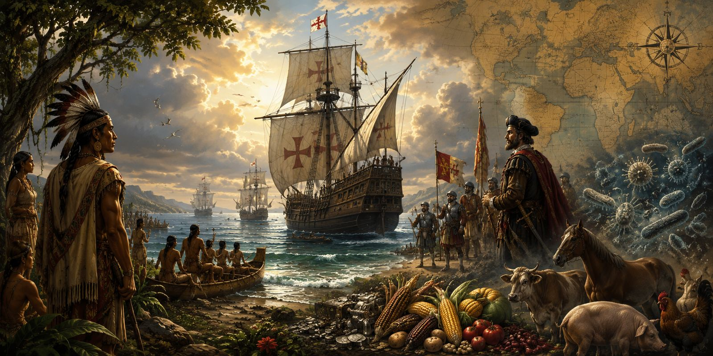
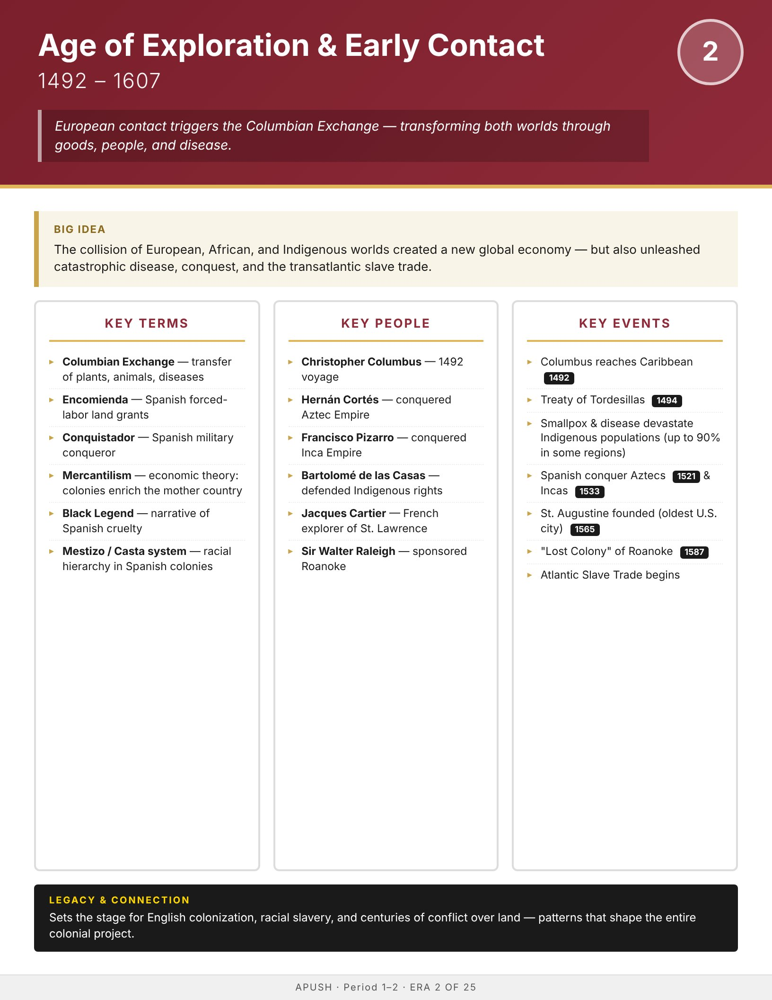

Era
Wise
AP History
AP United States History
Home
Course Sequence
Eras
Exam Prep
DBQ Guides
← Course Sequence

Era 2 of 25 · AP Period 1 · Lesson 2
Age of Exploration & Early Contact
1492–1607
Open infographic full size
Print

← ERA 1
Pre-Columbian America
ALL ERAS
Eras index
ERA 3 →
Colonial Era